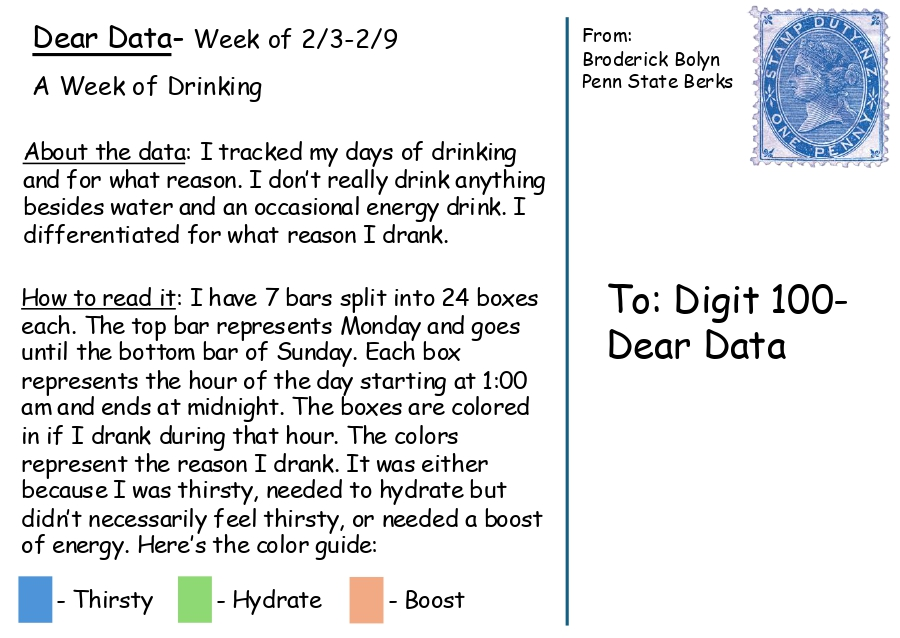
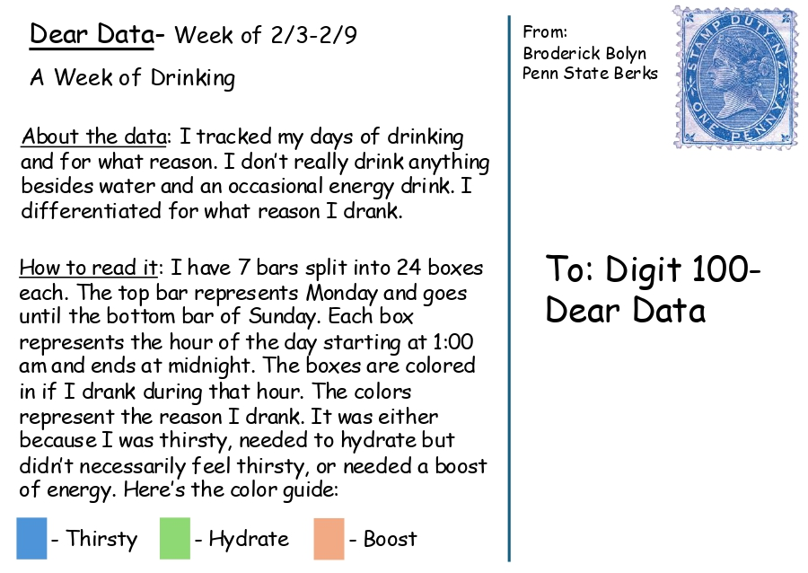

Dear Data Visualization
This project involved tracking personal data over a week and representing it visually in the style of "Dear Data." I recorded my drinking habits and designed a clock-based data visualization to showcase trends.
 

Arduino Inclinometer
For a technical project, I worked with an Arduino to create an inclinometer that measures angles. This project involved coding, sensor integration, and circuit design.
Adobe Express Career Presentation
I created a 5-minute Adobe Express presentation for a career development event, highlighting the best resources for Mechanical Engineering students.
View Adobe Express